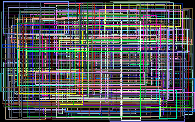

| Why shapes and lines? |
This section covers three basic drawing elements: lines, rectangles, and circles. Some of the programming techniques in this chapter may not appear to have any clear use, but the information here is a valuable resource and provides a good foundation.
| Drawing lines |
One problem with line drawing is that the screen is arranged in a grid of horizontal and vertical lines. A line drawn on the screen will cross both horizontal and vertical grid lines unless the line itself is either horizontal or vertical (Figure 4).
Figure 4. Drawing a line. |
Therefore, the line drawn on the screen will not be exact; it will only be a representation of the line. The shaded areas in Figure 5 show the line drawn on a grid.
Figure 5. How the line appears on a grid. |
One way to draw a line is to first calculate the slope of the line, then plot a pixel at each specified step along the major axis. To do this, we use a form of the point-slope equation of a line, which is
.
In the example in Figure 5, the major axis is the x axis because the line is more horizontal than vertical. The formula for the slope of a line is
.
Using (4,23) as (x1,y1) and (13,21) as (x2,y2),
.
Plot a pixel for each x 4 through 13 inclusive using the point-slope equation of a line. The first pixel plotted in this example is
,
or (4,23). The second, third and fourth pixels plotted is (5, 22.778), (6,22.556), and (7,22.333), or (5,23), (6,23), (7,22). See Table II for all the x and y values computed for this line.
 Figure 6. Calculating the pixels plotted. |
Table II. Example calculations from the line in Figure 6. |
| Bresenham's algorithm |
Another way to draw a line is to use Bresenham's line-drawing algorithm. The previous algorithm derives it, but uses a technique called incremental multiplication and division, which means the algorithm involves no actual multiplication or division, only additions or subtractions. An example of incremental multiplication would be computing 5+5+5 instead of 5*3. For incremental division, add the denominator to itself as long as the sum it is less than or equal to the numerator. For , 2+2+2+2=8, and since 2 was added to itself 4 times, the answer is 4. For , 4+4<11, so the answer is 2 with a remainder of 11-8 or 3.
The following program, which draws 5,000 lines on the screen, gives the complete code of Bresenham's line-drawing algorithm.
| Program: lines.c |
|
|
||||||||||||
| Having trouble compiling or running the program? See the Troubleshooting page. |
Figure 7. Screenshot of lines.exe. |
The results from lines.exe were as follows:
Slow line drawing took 4.285714 seconds. Fast line drawing took 1.758242 seconds. Fast line drawing was 2.437500 times faster.
The reason Bresenham's line drawing algorithm is faster is that it uses no multiplication or division. Multiplication and division are slow on a computer, even on a computer with a math coprocessor.
| Drawing polygons |
Using the line-drawing function from the lines.c
program, a polygon function can easily be created. The following
code segment demonstrates this.
void polygon(int num_vertices,
int *vertices,
byte color)
{
int i;
for(i=0;i<num_vertices-1;i++)
{
line(vertices[(i<<1)+0],
vertices[(i<<1)+1],
vertices[(i<<1)+2],
vertices[(i<<1)+3],
color);
}
line(vertices[0],
vertices[1],
vertices[(num_vertices<<1)-2],
vertices[(num_vertices<<1)-1],
color);
}
The polygon function could be used to draw a
triangle as follows:
int num_vertices=3;
int vertices[6]={5,0, /* (x1,y1) */
7,5, /* (x2,y2) */
1,4}; /* (x3,y3) */
polygon(3,vertices,15);
| Drawing rectangles |
Although this function is very flexible, it is not suitable
for simple shapes like rectangles because rectangles are drawn
with horizontal and vertical lines. The line-drawing function is
not optimized for drawing those types of lines. Vertical and
horizontal line drawing is as simple as plotting a pixel and
incrementing the pointer to video memory. The program rect.c
shows the difference between drawing rectangles using a
previously created function and drawing rectangles from scratch.
It also illustrates drawing solid rectangles.
| Program: rect.c |
|
|
||||||||||||
| Having trouble compiling or running the program? See the Troubleshooting page. |
|  Figure 8. Screenshot of rect.exe. |
Slow rectangle drawing took 4.230769 seconds. Fast rectangle drawing took 1.153846 seconds. Fast rectangle drawing was 3.666667 times faster.
Rectangle fills are one of more useful things when programming a graphical user interface. Circles, on the other hand, are not as common, but are described in the following sections to help the reader understand some important programming techniques that are used in many different applications.
| Using tables to speed up calculations |
In some applications, like drawing curves or animation, certain math functions like cosine and sine are used. On problem with these functions is that they are slow because of the time it takes the computer to calculate them. Not only that, but certain angles may be called more than once, like , so the computer has to calculate them multiple times.
To overcome this problem, tables can be used. When the program starts up, the sine and cosine of every angle is stored in an array:
#include <math.h>
...
float COS_TABLE[360], SIN_TABLE[360];
float pi=3.14159;
...
for(i=0;i<360;i++)
{
COS_TABLE[i]=cos((float)i/180 * pi);
SIN_TABLE[i]=sin((float)i/180 * pi);
}
In this example, the angles are mapped from zero to 359, but
they could be mapped in any way. A common mapping is zero to 255
because it fits in one byte. Also, tables are not limited to just
sine and cosine functions. The table used in the program circle.c
is more complex than sine or cosine, and is mapped from 0 to
1023.
| Fixed-point math |
In many situations, like the one in the previous example, floating point numbers are used. Floating point numbers are very accurate on computers, but are very slow when multiplication or other math functions are used on them.
An alternative to floating point numbers are fixed-point numbers. Fixed point numbers are faster than floating point, but are not as accurate. The accuracy is suitable for most applications involving VGA graphics, however.
Fixed-point numbers are integers with an imaginary decimal point somewhere in the middle of the number. Fixed-point numbers are referenced by the number of bits in the whole part, w, and the number of bits in the fraction part, f. Thus, a 6:2 fixed point number would have six bits in the whole part and two bits in the fraction part (Figure 9).
Figure 9. A 6:2 fixed-point number. |
To assign floating point values to fixed point numbers, multiply the floating point number by 2f:
unsigned char a,b,c; ... whole_part=6; fraction_part=2; a=14.75 * (1<<fraction_part); b=32.5 * (1<<fraction_part);
To display a fixed point number, divide the fixed point number by 2f.
printf("a=%f",(float)a / (1<<fraction_part));
Adding or subtracting fixed point numbers is the same as adding or subtracting two integers. For example, 001110.11 + 100000.10 = 101111.01, or 14.75 + 32.5 = 47.25.
c=a+b;
printf("a*b=%f\n",(float)c/4);
Multiplying two fixed point numbers is different: both the whole part and the fraction part will double in length. For example, multiplying two 6:2 fixed-point numbers generates a 12:4 number. The solution to this problem is to shift the number right by f bits, and ignore the upper w bits of the product.
c=(a*b) >> fraction_part;
The program circle.c uses 16:16 fixed-point
numbers to increase the speed of drawing circles.
| Drawing circles |
A simple way to draw a circle is to divide it into octants (Figure 10). First calculate only one octant of the circle; the rest of the circle is "mirrored" from the first octant.
Figure 10. Dividing a circle into octants to reduce computation. |
A formula for finding points along a common radius, like that of a circle, is
(x, y) = (r cos , r sin ),
where r is the radius of the circle and is the angle at which to plot the point. This formula is changed to
, ,
which is reduced to
.
This formula is used to find the y value for an x value and a radius. If the first octant calculated is octant 1, the x value starts at zero and increments, calculating y for every x. The loop finishes when x>y (Figure 11). The rest of the circle is mirrored from octant 1.
Figure 11. The arc is drawn in Octant 1 for all 0<=x<= y. |
| Program: circle.c |
This is not the fastest algorithm for drawing circles, but is
used in the following program to demonstrate using tables and
fixed-point numbers. circle.c also demonstrates
drawing filled circles.
|
|
||||||||||||
| Having trouble compiling or running the program? See the Troubleshooting page. |
Figure 12. Screenshot of circle.exe. |
Slow circle drawing took 6.868132 seconds. Fast circle drawing took 1.098901 seconds. Fast circle drawing was 6.249999 times faster.
Something noticeable about the output from circle.exe
is that the circles do not appear as circles, they appear as
ellipses. This is because of the odd aspect ratio of mode 0x13.
Instead of a 4:3 aspect ratio, it has an 8:5 aspect ratio, which
looks distorted on a screen. To overcome this, a circle's width
must be 1.2 times longer than its height. This is also something
to consider when drawing bitmaps; the next section covers
bitmaps.
| Next: Bitmaps & Palette Manipulation |